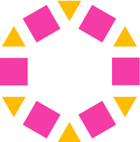

Databricks Lakehouse  Databricks
Databricks 
Unity Catalog
A Databricks a Delta Lake, Spark és MLflow felhő-native platformja. Lakehouse architektúrát építünk a WebShop Pro projektre.
Notebooks, Jobs, Unity Catalog, Delta Live Tables, MLflow, workflow-k
Databricks-alapú lakehouse pipeline bronze/silver/gold rétegekkel
Delta Lake · DLT · Medallion
Databricks workspace
Workspace = notebook-ek, jobok, klaszterek, katalógusok egy helyen.
| Komponens | Leírás |
|---|---|
| Workspace | Notebook-ek és fájlok |
| Cluster | Spark compute |
| Jobs | Ütemezett pipeline-ok |
| Unity Catalog | Governance és security |
| SQL Warehouse | SQL analytics |
| Model Registry | ML model kezelés |
# Create cluster
cluster = {
'cluster_name': 'webshop-etl',
'spark_version': '14.3.x-scala2.12',
'node_type_id': 'i3.xlarge',
'num_workers': 3,
'autotermination_minutes': 30
}Cluster 'webshop-etl' created Spark 14.3, 3 workers, auto-terminate 30min
Notebook alapok
A Databricks notebook cellák Python, SQL vagy Scala nyelven.
# Databricks notebook cell
# Read from S3
df = spark.read.format('delta').load('s3://webshop/bronze/orders')
print(f'Loaded {df.count()} orders')
df.display() # Pretty display in DatabricksLoaded 1420 orders [Interactive table with sorting and filtering]
Unity Catalog Unity Catalog
Unity Catalog = egységes governance: katalógus, séma, tábla, engedélyek.
-- SQL: Create catalog and schema CREATE CATALOG IF NOT EXISTS webshop; USE CATALOG webshop; CREATE SCHEMA IF NOT EXISTS bronze; CREATE SCHEMA IF NOT EXISTS silver; CREATE SCHEMA IF NOT EXISTS gold; -- Grant permissions GRANT USE CATALOG ON CATALOG webshop TO `data-engineers`; GRANT CREATE TABLE ON SCHEMA webshop.bronze TO `data-engineers`; GRANT SELECT ON SCHEMA webshop.gold TO `analysts`;
Catalog: webshop created Schemas: bronze, silver, gold Permissions: data-engineers (read/write), analysts (read-only)
Bronze réteg: adatbetöltés
Auto Loader: automatikus fájlfelfedezés és séma-inferencia.
# Auto Loader: incremental file ingestion
query = (spark.readStream.format('cloudFiles')
.option('cloudFiles.format', 'csv')
.option('cloudFiles.schemaLocation', 's3://webshop/schema/orders')
.option('header', True)
.load('s3://webshop/raw/orders/')
.writeStream
.format('delta')
.option('checkpointLocation', 's3://webshop/checkpoints/orders')
.trigger(once=True)
.toTable('webshop.bronze.orders'))Auto Loader: processed 15 new files Loaded 1420 rows into webshop.bronze.orders
Silver réteg: tisztítás
Adattisztítás, deduplikáció, típuskonverzió.
-- SQL: Silver transformation
CREATE OR REPLACE TABLE webshop.silver.orders AS
SELECT
order_id,
customer_id,
CAST(order_date AS TIMESTAMP) as ordered_at,
ABS(amount) as amount,
status,
loaded_at
FROM webshop.bronze.orders
WHERE status IS NOT NULL
AND amount > 0
AND order_id IS NOT NULL;Silver: 1380 rows (removed 40 invalid records) Data types validated
Gold réteg: analytics
Business aggregációk és dimenzió táblák.
-- SQL: Gold mart tables
CREATE OR REPLACE TABLE webshop.gold.fct_monthly_revenue AS
SELECT
DATE_TRUNC('MONTH', ordered_at) as month,
p.category,
c.segment,
COUNT(DISTINCT o.order_id) as order_count,
SUM(o.amount) as revenue
FROM webshop.silver.orders o
JOIN webshop.gold.dim_products p ON o.product_id = p.product_id
JOIN webshop.gold.dim_customers c ON o.customer_id = c.customer_id
GROUP BY 1, 2, 3;Gold: fct_monthly_revenue created with 48 rows Ready for BI dashboards
Delta Live Tables (DLT)
DLT = deklaratív pipeline definíció. Automatikus dependency management.
import dlt
@dlt.table(
name='silver_orders',
comment='Cleaned orders'
)
@dlt.expect('valid_amount', 'amount > 0')
@dlt.expect('not_null_id', 'order_id IS NOT NULL')
def silver_orders():
return (spark.readStream.table('webshop.bronze.orders')
.filter('status IS NOT NULL')
.withColumn('amount', F.abs('amount')))DLT Pipeline: webshop_dlt Tables: bronze_orders -> silver_orders -> gold_marts Data quality: 2 expectations defined
Databricks Jobs
Ütemezett workflow-k: notebook task-ok, Python wheel, SQL query.
# Job definition
job = {
'name': 'webshop-daily-etl',
'schedule': '0 6 * * *',
'tasks': [
{'task_key': 'bronze', 'notebook_task': {'notebook_path': '/etl/01_bronze'}},
{'task_key': 'silver', 'depends_on': ['bronze'], 'notebook_task': {'notebook_path': '/etl/02_silver'}},
{'task_key': 'gold', 'depends_on': ['silver'], 'notebook_task': {'notebook_path': '/etl/03_gold'}},
{'task_key': 'quality', 'depends_on': ['gold'], 'notebook_task': {'notebook_path': '/etl/04_quality'}},
]
}Job: webshop-daily-etl scheduled at 06:00 UTC bronze -> silver -> gold -> quality
Delta Lake haladó
OPTIMIZE, ZORDER, VACUUM, time travel, change data feed.
-- Optimize table performance OPTIMIZE webshop.gold.fct_orders ZORDER BY (customer_id, order_date); -- Time travel SELECT * FROM webshop.silver.orders VERSION AS OF 42; SELECT * FROM webshop.silver.orders TIMESTAMP AS OF '2024-05-01 06:00:00'; -- Clean old versions VACUUM webshop.silver.orders RETAIN 168 HOURS; -- Change Data Feed ALTER TABLE webshop.silver.orders SET TBLPROPERTIES (delta.enableChangeDataFeed = true);
OPTIMIZE: 50 files -> 8 files (6x smaller) Time travel: queried version 42 VACUUM: removed 35 old files CDF: enabled
MLflow integráció  MLflow
MLflow
MLflow a Databricks-ben: experiment tracking, model registry, serving.
import mlflow
from sklearn.ensemble import RandomForestClassifier
mlflow.set_experiment('/webshop/churn-prediction')
with mlflow.start_run():
model = RandomForestClassifier(n_estimators=100, max_depth=10)
model.fit(X_train, y_train)
accuracy = model.score(X_test, y_test)
mlflow.log_param('n_estimators', 100)
mlflow.log_metric('accuracy', accuracy)
mlflow.sklearn.log_model(model, 'model')
print(f'Accuracy: {accuracy:.3f}')Experiment: /webshop/churn-prediction Run ID: abc123 Accuracy: 0.923 Model registered: churn-predictor-v1
Spark SQL analytics
Direkt SQL lekérdezések a Spark-on, BI tool integráció.
-- SQL Analytics on Databricks
CREATE OR REPLACE VIEW webshop.gold.vw_dashboard AS
SELECT
month,
category,
revenue,
revenue - LAG(revenue) OVER (PARTITION BY category ORDER BY month) as mom_change,
SUM(revenue) OVER (PARTITION BY category ORDER BY month) as cumulative
FROM webshop.gold.fct_monthly_revenue;
-- Connect BI tools
-- Power BI, Tableau, Looker via Databricks SQL WarehouseView created: webshop.gold.vw_dashboard BI tools connected via SQL Warehouse endpoint
Medallion architektúra minta
Bronze (raw) -> Silver (clean) -> Gold (analytics) a lakehouse alapja.
Nyers adatok, séma on-the-fly, append-only
Tisztított, deduplikált, tipizált adatok
Business aggregációk, dimenziók, fact táblák
-- Full medallion overview SELECT 'bronze' as layer, COUNT(*) as tables FROM webshop.bronze UNION ALL SELECT 'silver', COUNT(*) FROM webshop.silver UNION ALL SELECT 'gold', COUNT(*) FROM webshop.gold;
layer | tables -------+-------- bronze | 5 silver | 5 gold | 8
Streaming analytics
Structured Streaming: valós idejű adatfeldolgozás.
from pyspark.sql import functions as F
# Stream from Kafka
stream = (spark.readStream
.format('kafka')
.option('kafka.bootstrap.servers', 'kafka:9092')
.option('subscribe', 'webshop.orders')
.load())
# Parse and write to Delta
(stream
.select(F.from_json(F.col('value').cast('string'), schema).alias('data'))
.select('data.*')
.writeStream
.format('delta')
.outputMode('append')
.option('checkpointLocation', '/checkpoint/stream')
.toTable('webshop.bronze.orders_stream'))Streaming query started Processing ~100 events/second Writing to webshop.bronze.orders_stream
Serverless SQL Warehouse
Serverless SQL végrehajtás: automatikus skálázás, másodpercekben indul.
# Create serverless SQL warehouse
warehouse = {
'name': 'webshop-analytics',
'cluster_size': '2X-Small',
'enable_serverless_compute': True,
'auto_stop_mins': 5,
'channel': {'name': 'CHANNEL_NAME_CURRENT'}
}
# Connect from any SQL client
# Host: xxx.databricks.com
# Port: 443
# HTTP Path: /sql/1.0/warehouses/abc123Serverless SQL Warehouse: webshop-analytics Start time: 5 seconds Auto-stop: 5 minutes Cost: pay-per-query
CI/CD Databricks pipeline
dbx (Databricks eXtensions) CI/CD integráció.
# .github/workflows/databricks-ci.yml
name: Databricks CI
on: [push]
jobs:
deploy:
runs-on: ubuntu-latest
steps:
- uses: actions/checkout@v4
- name: Deploy notebooks
run: |
dbx deploy --jobs=webshop-daily-etl
- name: Run integration test
run: |
dbx launch --job=webshop-daily-etl --as-run-submissionCI/CD Pipeline: Lint -> Test -> Deploy -> Integration Test All green!
Governance és security
Row-level security, column masking, audit logging.
-- Row-level security
CREATE FUNCTION webshop.region_filter(region STRING)
RETURNS BOOLEAN
RETURN region = current_user_metadata('region');
-- Apply to table
ALTER TABLE webshop.gold.fct_revenue
SET ROW FILTER webshop.region_filter ON (region);
-- Column masking
ALTER TABLE webshop.gold.dim_customers
ALTER COLUMN email SET MASK email_mask;Row-level security: applied Column masking: email column masked Audit log: tracking all access
Összefoglalás
Gratulálunk! Megtanultad a Databricks Lakehouse platformot!
| Megtanultuk | Következő |
|---|---|
| Unity Catalog, DLT | AI Data Engineer kurzus |
| Medallion architektúra | Feature store építés |
| MLflow, Streaming | Valós idejű ML pipeline |
| Serverless, CI/CD | Production deployment |
AI Data Engineer - feature store és data quality!